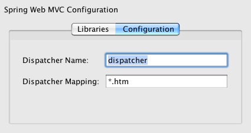

Apache NetBeans
Apache NetBeansLatest release
Введение в веб-модель MVC Spring
| This tutorial needs a review. You can open a JIRA issue, or edit it in GitHub following these contribution guidelines. |
В этом документе показано создание простого веб-приложения MVC с помощью платформы Spring. В приложении пользователь может ввести свое имя в текстовом поле, и после нажатия кнопки "ОК" это имя отображается на второй странице вместе с приветствием.
Платформа Spring – популярная платформа приложений с открытым кодом, предназначенная для упрощения разработки для J2EE. Она состоит из контейнера, платформы управления элементами и набора интегрируемых служб для веб-интерфейсов пользователя, транзакций и сохранения состояния. В состав платформы Spring входит Spring Web MVC – расширяемая платформа MVC для создания веб-приложений.
В IDE реализована встроенная поддержка платформ Spring 4.x и 3.x. Библиотеки платформ упакованы в IDE и автоматически добавляются в путь к классу при выборе платформы. Предоставляются параметры настройки, например название и сопоставление Spring Web MVC DispatcherServlet. При создании проекта можно зарегистрировать библиотеку JSTL. Также предоставляется поддержка файлов настройки XML компонента, в том числе следующие функциональные возможности:
-
Автозавершение кода. Вызывается в файлах настройки XML Spring для классов Java и ссылок на компоненты.
-
Переходы. Гиперссылки на классы Java и свойства, указанные в определениях компонентов Spring, а также гиперссылки на описания других компонентов.
-
Реорганизация кода. Переименование ссылок на классы Java в файлах настройки XML Spring.
Для получения дополнительных сведений об платформе Spring посетите веб-сайт http://www.springsource.org/. Более подробное пояснение поведения артефактов платформы Spring и их взаимодействия с другими объектами в приложении приведено на официальном сайтеSpring Framework Reference Documentation и в документации Spring Framework API.

Figure 1. Содержимое этой страницы применимо к IDE NetBeans 7.2, 7.3, 7.4 и 8.0
Для работы с этим учебным курсом требуются программное обеспечение и ресурсы, перечисленные ниже.
| Программное обеспечение или материал | Требуемая версия |
|---|---|
7.2, 7.3, 7.4, 8.0, Java EE |
|
версия 7 или 8 |
|
3.x, 4.x |
Примечания:
-
При установке среды IDE Java позволяет дополнительно установить сервер GlassFish и зарегистрировать его в среде IDE.
-
Если необходимо сравнить проект с работающим решением, можно загрузить демонстрационное приложение.
Создание проекта с поддержкой веб-модели MVC Spring
Создание схемы проекта с поддержкой веб-модели MVC Spring
Начните с создания проекта веб-приложения с поддержкой платформы Spring.
-
Выберите New Project ("Создать проект") (Ctrl-Shift-N; ⌘-Shift-N на Mac) из меню File ("Файл") среды IDE. Выберите категорию "Java Web", затем выберите проект "Веб-приложение". Нажмите кнопку "Далее".
-
В поле "Имя проекта" введите HelloSpring. Нажмите кнопку "Далее".
-
На третьем экране "Сервер и параметры настройки" отключите параметр "Enable Contexts and Dependency Injection", поскольку в данном учебном курсе не используется спецификация JSR-299.
-
Убедитесь, что в разворачивающемся списке 'Сервер' выбран сервер GlassFish. Нажмите кнопку "Далее".
Версия Java EE зависит от версии выбранного сервера. Если выбран сервер GlassFish Server 4.0, в качестве версии Java EE по умолчанию указывается Java EE 7 Web.
-
На четвертом экране мастера на панели "Frameworks" выберите "Spring Web MVC".
-
Выберите Spring Framework 3.x в списке "Библиотека Spring".

Figure 2. Spring Web MVC отображается на панели палтформы
Обратите внимание, что IDE позволяет добавить библиотеку Spring 4.x в проект, но в данном учебном курсе используется компонент SimpleFormController, не поддерживаемый на платформе Spring 4.x. Кроме того, если выбран вариант Spring Web MVC, следует помнить, что во время создания проекта в путь к классу по умолчанию добавляется библиотека JSTL (JavaServer Pages Standard Tag Library). Отключите этот параметр (как показано на снимке экрана), поскольку в этом учебном курсе не требуется JSTL.
-
Выберите вкладку "Настройка" и обратите внимание, что в мастере можно настроить имя и отображение сервлета обработчика Spring.

Figure 3. Укажите имя и сопоставление сервлета Spring Dispatcher на вкладке 'Конфигурация'
-
Нажмите кнопку "Завершить". В результате создается проект для всего приложения, в т.ч. все метаданные, а также сценарий сборки проекта Ant, с которым можно ознакомиться в окне "Файлы" (сочетание клавиш CTRL+2; ⌘+2 в Mac OS). Структуру шаблона можно просмотреть в окне "Проекты" (сочетание клавиш CTRL+1; ⌘+1 в Mac OS). Также следует отметить, что по умолчанию в редакторе среды IDE открываются четыре файла:
dispatcher-servlet.xml,applicationContext.xml,redirect.jspиindex.jsp. -
В окне 'Проекты' разверните узел 'Библиотеки' нового проекта и обратите внимание, что файлы JAR Spring включены в путь к классу проекта.

Figure 4. Файлы JAR Spring указаны в узле 'Библиотеки' проекта
Выполнение схемы проекта
Перед изменением файлов проекта следует попытаться запустить созданный проект в среде IDE:
-
Нажмите кнопку 'Запустить проект' (
 ) на главной панели инструментов IDE. В среде IDE автоматически запускается сервер GlassFish, если он не был запущен, проект компилируется и развертывается на сервере. Обратите внимание на данные, отображаемые в окне "Вывод" среды IDE (сочетание клавиш CTRL+4; ⌘+4 в Mac OS). В конце этих данных отображается сообщение
) на главной панели инструментов IDE. В среде IDE автоматически запускается сервер GlassFish, если он не был запущен, проект компилируется и развертывается на сервере. Обратите внимание на данные, отображаемые в окне "Вывод" среды IDE (сочетание клавиш CTRL+4; ⌘+4 в Mac OS). В конце этих данных отображается сообщение BUILD SUCCESSFUL.

Figure 5. В окне вывода отображаются сведения при запуске проекта
В среде IDE запускается браузер по умолчанию, и отображается содержимое представления страницы приветствия (/WEB-INF/jsp/index.jsp).

Figure 6. Выходные данные страницы приветствия отображаются в браузере
При выполнении проекта в среде IDE он компилируется и развертывается на сервере, а затем открывается в браузере по умолчанию. Более того, среда IDE предоставляет возможность "Развертывание при сохранении", которая включена по умолчанию для веб-проектов. При сохранении файлов в редакторе проект автоматически компилируется и развертывается на сервере. Для просмотра изменений достаточно просто обновить страницу в браузере.
Ключ к пониманию произошедших событий представлен в дескрипторе развертывания проекта (web.xml). Чтобы открыть этот файл в редакторе исходного кода щелкните правой кнопкой мыши узел WEB-INF > web.xml в окне 'Проекты' и выберите 'Правка'. Точка входа для приложения по умолчанию — redirect.jsp:
<welcome-file-list>
<welcome-file>redirect.jsp</welcome-file>
</welcome-file-list>В файле redirect.jsp содержится оператор перенаправления, направляющий все запросы в index.htm:
<% response.sendRedirect("index.htm"); %>Обратите внимание, что в дескрипторе развертывания все шаблоны URL-адресов, соответствующие выражению *.htm отображаются на `DispatcherServlet` Spring.
<servlet>
<servlet-name>dispatcher</servlet-name>
<servlet-class>org.springframework.web.servlet.DispatcherServlet</servlet-class>
<load-on-startup>2</load-on-startup>
</servlet>
<servlet-mapping>
<servlet-name>dispatcher</servlet-name>
<url-pattern>*.htm</url-pattern>
</servlet-mapping>Полностью определенное имя сервлета диспетчера сервлета org.springframework.web.servlet.DispatcherServlet. Это класс из библиотеки Spring, которая была добавлена в путь к классам проекта при его создании. Чтобы проверить это, разверните узел "Библиотеки" в окне "Проекты". Найдите файл spring-webmvc-3.1.1.RELEASE.jar, затем разверните его и найдите org.springframework.web.servlet > DispatcherServlet.
DispatcherServlet обрабатывает входящие запросы на основе параметров настройки из файла dispatcher-servlet.xml. Откройте файл dispatcher-servlet.xml, щелкнув его вкладку в редакторе. Обратите внимание на следующий код.
<bean id="urlMapping" class="org.springframework.web.servlet.handler.link:http://static.springsource.org/spring/docs/3.1.x/javadoc-api/org/springframework/web/servlet/handler/SimpleUrlHandlerMapping.html[+SimpleUrlHandlerMapping+]">
<property name="mappings">
<props>
<prop key="/index.htm">indexController</prop>
</props>
</property>
</bean>
<bean id="viewResolver"
class="org.springframework.web.servlet.view.link:http://static.springsource.org/spring/docs/3.1.x/javadoc-api/org/springframework/web/servlet/view/InternalResourceViewResolver.html[+InternalResourceViewResolver+]"
p:prefix="/WEB-INF/jsp/"
p:suffix=".jsp" />
<bean name="indexController"
class="org.springframework.web.servlet.mvc.link:http://static.springsource.org/spring/docs/3.1.x/javadoc-api/org/springframework/web/servlet/mvc/ParameterizableViewController.html[+ParameterizableViewController+]"
p:viewName="index" />В этом файле определены три компонента: indexController, viewResolver и urlMapping. Когда DispatcherServlet получает запрос, соответствующий выражению *.htm, например, index.htm, выполняется поиск контроллера внутри urlMapping, способного обработать этот запрос. Выше можно заметить, что существует свойство mappings, связывающее /index.htm с indexController.
Среда выполнения выполняет поиск определения компонента indexController, предоставляемого схемой проекта. Обратите внимание, что класс indexController расширяет класс `ParameterizableViewController`. Это еще один класс инфраструктуры Spring, который просто возвращает представление. Также обратите внимание, что p:viewName="index" указывает логическое имя представления, которое разрешается с помощью viewResolver путем добавления /WEB-INF/jsp/ слева и добавления .jsp справа. Это позволяет среде выполнения найти файл в папке приложения и предоставить в ответ представление страницы приветствия (/WEB-INF/jsp/index.jsp).
Обзор приложения
Создаваемое приложение состоит из двух страниц JSP (которые называются представлениями в терминологии MVC). Первое представление содержит форму HTML с полем, в которое пользователь вводит свое имя. Второе представление — страница, на которой отображается приветственное сообщение с именем пользователя.
Представления управляются контроллером, который получает запросы к приложению и принимает решение, какие представления вернуть. Также он передает в представления информацию, которая требуется для их отображения (она называется моделью). Контроллер этого приложения называется HelloController.
В сложном веб-приложении бизнес-логика не размещается непосредственно в контроллере. Вместо этого контроллером используется другой объект — служба — при каждом обращении к бизнес-логике. В этом приложении бизнес-логика ограничена обработкой приветственного сообщения, и для этой цели создается служба HelloService.
Реализация службы
Теперь, после проверки правильности настроек среды, можно начать расширение схемы проекта в соответствии с имеющимися требованиями. Начните с создания класса HelloService.
-
Нажмите кнопку 'Создать файл' (
 ) на панели инструментов IDE. (В качестве альтернативы нажмите Ctrl-N; ⌘-N в Mac.)
) на панели инструментов IDE. (В качестве альтернативы нажмите Ctrl-N; ⌘-N в Mac.) -
Выберите категорию Java, затем Класс Java и нажмите кнопку "Далее".
-
В мастере создания класса Java введите имя класса HelloService, затем введите имя пакета service, чтобы создать для класса новый пакет.
-
Нажмите кнопку "Завершить". В среде IDE создается и открывается в редакторе новый класс.
Класс HelloService предоставляет очень простую службу. Он принимает в качестве параметра имя и подготавливает и возвращает строку String, содержащую это имя. Создайте в редакторе следующий метод sayHello() для этого класса (изменения помечены полужирным шрифтом).
public class HelloService {
*public static String sayHello(String name) {
return "Hello " + name + "!";
}*
}Реализация контроллера и модели
Для обработки пользовательских данных и выбора представления для возврата можно использовать `SimpleFormController`.
*Примечание: * SimpleFormController устарел в Spring 3.x. Он используется в этом учебном руководстве для выполнения задач демонстрации. Однако следует использовать контроллер с аннотациями вместо файлов XML.
-
Откройте мастер создания файлов, нажав Ctrl-N (⌘-N в Mac). Выберите категорию Spring Framework и тип файла Simple Form Controller.

Figure 7. IDE NetBeans обеспечивает шаблоны для различных артефактов Spring
IDE NetBeans обеспечивает шаблоны для различных артефактов Spring, включая файл конфигурации Spring XML, `AbstractController` и `SimpleFormController`.
-
Нажмите кнопку "Далее".
-
Назовите класс HelloController и создайте для него новый пакет, для этого введите в поле "Package" текст controller. Нажмите кнопку "Завершить". В среде IDE создается и открывается в редакторе новый класс.
-
Укажите свойства контроллера, раскомментировав методы установки, отображаемые шаблоном класса по умолчанию. Чтобы раскомментировать фрагмент кода, выделите его, как показано на рисунке, и нажмите сочетание клавиш CTRL+/ (⌘+/ в Mac OS).

Figure 8. Выделите фрагменты кода, затем нажмите Ctrl-/ для переключения комментариев
Нажатие сочетания клавиш CTRL+/ (⌘+/ в Mac OS) переключает комментарии в редакторе.
-
Внесите следующие изменения (показаны полужирным шрифтом).
public HelloController() {
link:http://static.springsource.org/spring/docs/3.1.x/javadoc-api/org/springframework/web/servlet/mvc/BaseCommandController.html#setCommandClass(java.lang.Class)[+setCommandClass+](*Name*.class);
link:http://static.springsource.org/spring/docs/3.1.x/javadoc-api/org/springframework/web/servlet/mvc/BaseCommandController.html#setCommandName(java.lang.String)[+setCommandName+]("*name*");
link:http://static.springsource.org/spring/docs/3.1.x/javadoc-api/org/springframework/web/servlet/mvc/SimpleFormController.html#setSuccessView(java.lang.String)[+setSuccessView+]("*hello*View");
link:http://static.springsource.org/spring/docs/3.1.x/javadoc-api/org/springframework/web/servlet/mvc/SimpleFormController.html#setFormView(java.lang.String)[+setFormView+]("*name*View");
}Параметр FormView позволяет задать имя представления, используемого для отображения формы. Это страница, содержащая текстовое поле для ввода имени пользователя. Параметр SuccessView аналогичным образом позволяет задать имя представления, отображаемого при успешной передаче данных. Параметр CommandName задает имя команды в модели. В данном случае, команда — это объект формы со связанными параметрами запроса Параметр CommandClass определяет имя класса команды. Экземпляр этого класса заполняется и проверяется на допустимость при каждом запросе.
Обратите внимание, что для Name в методе setCommandClass() отображается ошибка:

Figure 9. Метка ошибки отображается для setCommandClass()
Требуется создать класс Name в качестве простого компонента, хранящего данные каждого запроса.
-
В окне 'Проекты', щелкните правой кнопкой мыши узел проекта и выберите 'Создать' > 'Класс Java'. Отображается мастер создания класса Java.
-
Введите имя класса Name и выберите в выпадающем списке пакет controller.
-
Нажмите кнопку "Завершить". Класс
Nameбудет создан и открыт в редакторе. -
В классе
Nameсоздайте полеvalue, затем создайте методы доступа (т.е. методы получения и установки) для этого поля. Сначала объявите полеvalue:
public class Name {
*private String value;*
}Чтобы быстро ввести “private”, можно ввести “pr” и затем нажать клавишу TAB. Автоматически добавляется модификатор доступа “private”. Это пример использования шаблонов кода редактора. Полный список шаблонов кода можно просмотреть, выбрав в меню "Справка" пункт "Таблица сочетаний клавиш".
В среде IDE предусмотрена возможность автоматического создания методов доступа. В редакторе щелкните правой кнопкой мыши в `value` и выберите 'Вставить код' (или нажмите Alt-Insert; Ctrl-I в Mac). Во всплывающем меню выберите пункт "Методы получения и установки".

Figure 10. Всплывающее меню создания кода позволяет настроить методы доступа
-
В диалоговом окне выберите параметр
value : Stringи нажмите кнопку "ОК". МетодыgetValue()иsetValue()добавляются к классуName:
public String getValue() {
return value;
}
public void setValue(String value) {
this.value = value;
}-
Нажмите сочетание клавиш CTRL+TAB и выберите
HelloController, чтобы переключиться обратно к классуHelloController. Обратите внимание, что значок ошибки исчез, поскольку классNameтеперь существует. -
Удалите метод
doSubmitAction()и раскомментируйте метод `onSubmit()`. МетодonSubmit()позволяет создать собственныйModelAndView, что требуется здесь. Внесите следующие изменения:
@Override
protected ModelAndView onSubmit(
HttpServletRequest request,
HttpServletResponse response,
Object command,
BindException errors) throws Exception {
Name name = (Name) command;
ModelAndView mv = new ModelAndView(getSuccessView());
mv.addObject("helloMessage", helloService.sayHello(name.getValue()));
return mv;
}Как указано выше, command приводится к объекту Name. Создается экземпляр ModelAndView и с помощью метода получения в SimpleFormController создается представление. После этого модель заполняется данными. Единственный элемент модели в данном случае — приветственное сообщение, получаемое из ранее созданной службы HelloService. Для добавления к модели приветственного сообщения можно использовать метод addObject() под именем helloMessage.
-
Исправьте ошибки импорта, щелкнув правой кнопкой мыши в редакторе и выбрав 'Исправить ошибки' (Ctrl-Shift-I; ⌘-Shift-I в Mac).

Figure 11. Нажмите Ctrl-Shift-I, чтобы исправить выражения импорта в файле
Примечание. Убедитесь, что * org.springframework.validation.BindException * и * org.springframework.web.servlet.ModelAndView * выбраны в диалоговом окне 'Исправить все выражения импорта'.
-
Нажмите кнопку "ОК". В начало файла добавляется следующий оператор импорта:
import link:http://static.springsource.org/spring/docs/3.1.x/javadoc-api/org/springframework/web/servlet/ModelAndView.html[+org.springframework.web.servlet.ModelAndView+];Как указано в документации API, этот класс "представляет модель и представление, возвращаемые контроллером для разрешения DispatcherServlet. Представление может принимать форму имени представления String, которое должно быть разрешено объектом ViewResolver; в качестве альтернативы объект View может быть указан непосредственно. Модель — это объект Map, что позволяет использовать несколько объектов, выбираемых по имени."
Обратите внимание, что на данном этапе исправлены не все ошибки, поскольку класс по-прежнему не может определить класс HelloService и использовать его метод sayHello().
-
Внутри
HelloControllerобъявите частное полеHelloService:
private HelloService helloService;Затем создайте для поля общедоступный метод установки:
public void setHelloService(HelloService helloService) {
this.helloService = helloService;
}Наконец, щелкните правой кнопкой мыши в редакторе и выберите 'Исправить выражения импорта' (Ctrl-Shift-I; ⌘-Shift-I в Mac). В начало файла добавляется следующий оператор импорта:
import service.HelloService;Все ошибки исправлены.
-
Зарегистрируйте
HelloServiceв файлеapplicationContext.xml. Откройте в редакторе файлapplicationContext.xmlи введите следующее определение компонента:
<bean name="helloService" class="service.HelloService" />В состав поддержки Spring в среде IDE входит автозавершение кода в файлах настройки XML для классов Java и ссылок на компоненты. Для вызова автозавершения кода нажмите сочетание клавиш CTRL+ПРОБЕЛ в редакторе:

Figure 12. Автозавершение кода вызывается при нажатии Ctrl-Space
-
Зарегистрируйте
HelloControllerв файлеdispatcher-servlet.xml. Откройте в редакторе файлdispatcher-servlet.xmlи введите следующее определение компонента:
<bean class="controller.HelloController" p:helloService-ref="helloService"/>Реализация представлений
Для реализации представлений в проекте требуется создать две страницы JSP. Первая из них, nameView.jsp, служит страницей приветствия и позволяет пользователю ввести имя. На второй, helloView.jsp, отображается приветственное сообщение с введенным именем. Сначала создайте helloView.jsp.
-
В окне 'Проекты' щелкните правой кнопкой мыши узел WEB-INF >
jspи выберите 'Создать' > JSP. Откроется мастер "New JSP File". Введите имя файла helloView. -
Нажмите кнопку "Завершить". Страница JSP создается в папке
jspи открывается в редакторе. -
В редакторе измените заголовок файла на
Helloи измените выходное сообщение для полученияhelloMessageобъектаModelandView, созданного вHelloController.
<head>
<meta http-equiv="Content-Type" content="text/html; charset=UTF-8">
<title>*Hello*</title>
</head>
<body>
<h1>*${helloMessage}*</h1>
</body>-
Тем же способом создайте вторую страницу JSP и назовите ее
nameView. -
В редакторе добавьте следующее определение библиотеки тегов Spring к
nameView.jsp.
<%@taglib uri="http://www.springframework.org/tags" prefix="spring" %>При этом импортируется библиотека тегов Spring, содержащая полезные теги для реализации представлений как страниц JSP.
-
Измените содержимое тегов
<title>и<h1>наEnter Your Name. -
После тега
<h1>введите следующий код:
<spring:nestedPath path="name">
<form action="" method="post">
Name:
<spring:bind path="value">
<input type="text" name="${status.expression}" value="${status.value}">
</spring:bind>
<input type="submit" value="OK">
</form>
</spring:nestedPath>spring:bind позволяет привязать свойство компонента. Тег привязки обеспечивает состояние и значение привязки, которые используются в качестве имени и значения поля ввода. Таким образом, при передаче формы платформе Spring будет известен способ извлечения переданного значения. Здесь командный класс (controller.Name) имеет свойство value, поэтому нужно установить path равным value.
spring:nestedPath позволяет добавить к компоненту слева определенный путь. Поэтому при использовании вместе с spring:bind путь к компоненту становится равным name.value. Как уже указывалось, имя команды HelloController — name. Поэтому этот путь ссылается на свойство value компонента name в контексте страницы.
-
Измените относительную точку входа для приложения. В настоящий момент точка входа по-прежнему
index.htm, что в соответствии с разделом Выполнение схемы проекта перенаправляется наWEB-INF/jsp/index.jsp. Можно указать точку входа для проекта после его развертывания и запуска. В окне 'Проекты', щелкните правой кнопкой мыши узел проекта и выберите 'Свойства'. Открывается диалоговое окно "Свойства проекта". В области "Категории" выберите "Выполнить". В поле "Относительный URL-адрес" введите/hello.htmи нажмите кнопку "ОК".
Возникает вопрос: где же располагается отображение hello.htm на HelloController? Отображение не добавлялось к компоненту urlMapping, как в случае страницы приветствия схемы проекта index.htm. Такая возможность обеспечивается средствами автоматизации платформы Spring, предоставляемыми следующим определением компонента dispatcher-servlet.xml:
<bean class="org.springframework.web.servlet.mvc.support.ControllerClassNameHandlerMapping"/>Этот компонент отвечает за автоматическое создание отображения URL-адресов для всех зарегистрированных в файле контроллеров. Из полностью определенного имени контроллера (в данном случае controller.HelloController) удаляется имя пакета и суффикс Controller, и затем результат используется как образец URL-адреса. Таким образом, для HelloController создается отображение hello.htm. Это средство, однако, не срабатывает для контроллеров, включенных в платформу Spring, например, ParameterizableViewController. Для них требуется явное отображение.
-
В окне 'Проекты' щелкните правой кнопкой мыши узел проекта и выберите 'Выполнить'. Проект компилируется, развертывается и выполняется. Открывается браузер по умолчанию и отображается
hello.htmкакnameViewпроекта:

Figure 13. nameView отображается в браузере
Введите имя в текстовом поле и нажмите ENTER. Отображается helloView с приветственным сообщением:

Figure 14. helloView отображается в браузере
Дополнительные сведения
На этом завершается введение в платформу Spring в IDE NetBeans. В этом документе описывается создание простого веб-приложения MVC в IDE NetBeans с помощью платформы Spring и описывается интерфейс IDE для разработки веб-приложений.
Пользователям рекомендуется продолжить изучение платформы Spring путем изучения других учебных курсов в IDE NetBeans, таких как Пошаговая разработка приложения MVC платформы Spring с помощью NetBeans и сервера GlassFish. Это официальный учебный курс по платформе Spring, разработанный Томасом Рисбергом (Thomas Risberg), адаптированный для IDE NetBeans Арулази Дхесиасилан (Arulazi Dhesiaseelan).
Многие возможности модуля Spring среды NetBeans могут применяться и в приложениях платформы Spring, не связанных с Интернетом.
Для ознакомления с другими связанными учебными курсами воспользуйтесь следующими материалами:
-
Добавление поддержки веб-платформы. Базовое руководство, в котором описан процесс добавления поддержки путем установки подключаемого модуля платформы с помощью центра обновления NetBeans.
-
Введение в JavaServer Faces 2.0. Показано добавление поддержки JSF 2.0 к существующему проекту, связывание управляемых компонентов и использование шаблонов фейслетов.